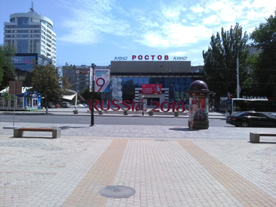
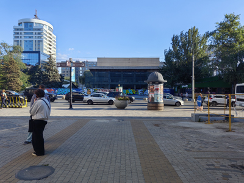

Бывший кинотеатр «Ростов»


И снова 2018 год, и снова улица Большая Садовая. На этот раз вид на бывший кинотеатр «Ростов», заснятый с площадки возле универмага «Солнышко».
Тогда кинотеатр уже больше года как не показывал фильмы. «Ростов» был однозальным кинотеатром и не смог конкурировать с набиравшими популярность кинотеатрами-мультиплексами с несколькими залами. Какое-то время здание частично использовали под выставки, коворкинг и арт-пространство. Но потом закрыли совсем.
Перед зданием кинотеатра видны объекты тематического оформления к Чемпионату мира по футболу, который в 2018 году проходил в России, и в частности, в Ростове-на-Дону состоялось несколько важных матчей. По центру объемные буквы «RUSSIA 2018», а слева — палатка магазина с официальной атрибутикой Чемпионата. Справа заметна довольно приятно выглядевшая чайхана с забавной рекламой плова, о которой я рассказывал в предыдущей статье.


В сентябре 2026 года место выглядит, честно говоря, значительно хуже. Исписанный строительный забор, вместо чайханы какое-то другое кафе с крышей, выкрашенной в «приятный» зеленый цвет каждого второго подъезда российских хрущевок, площадка перед универмагом разрыта, а здание бывшего кинотеатра ободрано до костей, так сказать.
Но есть и хорошая новость. Здание кинотеатра не разбирают совсем, как это может показаться на первый взгляд. Идет процесс реконструкции. Планируется сделать концертный зал с современной инфраструктурой. В частности, предполагается разместить в отреставрированном здании Ростовскую филармонию, пока там будет проходить свой ремонт. Выходит, объект еще поживет и даже сохранит свое культурное назначение.